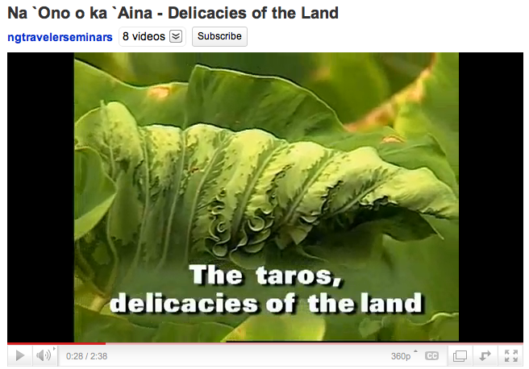

E kanu mea ‘ai o nānā keiki i ka ha‘i. ‘Ōlelo No‘eau, No. 317
Plant edible food plants lest your children look with longing at someone else's.
Aloha kākou. Kupuna means elder, grandparent or ancestor. Kalo or taro is a nutrient rich, starchy food of Hawai‘i. Taro grows world-wide, but for the Hawaiian people this crop is central to our creation story. We describe Hāloa as our older brother because he takes care of us if we take care of him.
This website kupunakalo.com promotes our view that Kalo is food, through photos of varieties, a curriculum about Hawaiian culture and the challenges of farming, contact information for field visits to find varieties, nutrition information and recognition of teachers in the community. Here is a PDF: Kalo Protocol from kupuna Pukui.
The photo above shows Jerry Konanui standing in a field of kalo variety Maui Lehua. Photo credit Dr. Scot Nelson.

Please view this video of Uncle Jerry Konanui to understand our intent: Na `Ono o ka `Aina - Delicacies of the Land, min. 2:38. By ngtravelerseminars. Link to Youtube.com.
Mahalo to the kupuna and the friends who took time to share their knowledge of culture, food and science. This mana‘o is as my ears heard it. If your view is different, please join in our goal to communicate, explore and build understanding.
This website is a makana (a gift) meant for you. We offer you Taropy. Mai e ‘ai kākou.
This image below is our Kupunakalo logo.